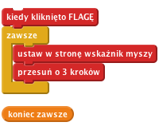
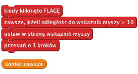
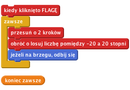
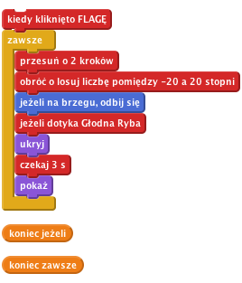
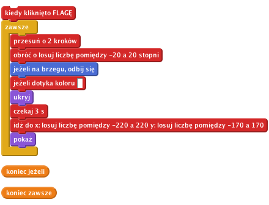
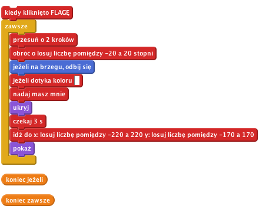
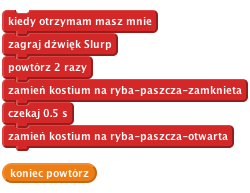

Głodna ryba
Poziom 2
Zrobimy grę w karmienie ryb! Będziesz kierować dużą głodną rybą pływającą po morzu, aby udało jej się zjeść wszystkie krewetki.
Dodajmy rybę, która pływa po morzu!

Wciśnij zieloną flagę.
Poruszaj kursorem myszy po morzu. Czy ryba pływa za nim?
Co się dzieje, jeżeli nie ruszasz kursorem i ryba go łapie? Jak to wygląda? Dlaczego tak się dzieje?

Jeżeli chcesz, możesz zmienić liczby w skrypcie. W jaki sposób zmienia to sposób poruszania się Głodnej Ryby? Zmień odległość na jakiąś dużą liczbę (np. 100) albo jakąś bardzo małą (np. 1). Zmień ilość kroków na coś dużego (np. 20) lub małego (np. 1 lub nawet 0). Co się dzieje?

Wciśnij zieloną flagę i popatrz, jak krewetka porusza się po ekranie. Czy pływa tak jak trzeba? Czy wygląda to realistycznie?
Obecnie ryba i krewetka nie interesują się sobą. Zajmiemy się tym w następnym kroku.
Chcemy, aby ryba zjadła swoją ofiarę! Jak tylko ryba złapie żyjątko, dwie rzeczy muszą mieć miejsce:

Spróbuj złapać krewetkę – czy widzisz jakieś problemy? Zauważ, że krewetka znika bez względu na to, z której strony dotknie rybę. Poza tym, jeżeli ryba się nie rusza, to po 3 sekundach może od razu zjeść krewetkę – to jest trochę niefajne!

Spróbuj złapać krewetkę jeszcze raz – czy znika ona tylko wtedy, kiedy dotknie zębów ryby? I czy pojawia się w losowym miejscu na ekranie zamiast od razu tam, gdzie została zjedzona?

Teraz chcemy, aby ryba odpowiedziała na to głośnym zamknięciem paszczy.

Skoro nasza Głodna Ryba jest gotowa jeść, wypełnijmy ocean jedzeniem. Kliknij na krewetce prawym przyciskiem myszy i zduplikuj ją kilka razy.
Kliknij zieloną flagę.
Czy Głodna Ryba zjada swoje ofiary? Czy potrafi zjeść każdą krewetkę?
Dlaczego musimy dodać blok 'pokaż' na początku skryptu każdej krewetki? Pomyśl, co by się stało, gdyby gra została zatrzymana zanim zjedzona krewetka ponownie pojawi się na ekranie. Co by się stało po uruchomieniu gry?
Brawo! Udało Ci się skończyć podstawową wersję gry. Jest jeszcze kilka rzeczy, które możesz zmienić w grze. Pora na wyzwania!
Póki co wszystkie krewetki poruszają się tak samo.
Spróbuj zmienić sposób w jaki porusza się jedna z krewetek.
Podpowiedź: Postaraj się nie spędzić na tym zadaniu zbyt dużo czasu. Warto również spojrzeć na inne wyzwania!
Wybierz jedną krewetkę, nad którą będziesz pracować.
Jeżeli ma ona ten sam kostium co inne, zmień jego kolor używając bloku ustaw efekt kolor na. W ten sposób będziesz łatwo widzieć, nad którą krewetką pracujesz.
Spraw, aby ta krewetka poruszała się wolniej od innych.
Podpowiedź: Spójrz na blok `przesuń o 2 kroków'.
Czy krewetka porusza się wolniej? Czy gra jest teraz lepsza?
Jeżeli udało ci się to zrobić, wybierz inną krewetkę i spraw, aby poruszała się szybciej od innych.
Czy krewetki poruszają się naturalnie? Czy gra jest jeszcze lepsza po tych zmianach?
Podpowiedź Jeżeli krewetki pływają w kółko, zmień wartości z bloku 'losuj liczbę pomiędzy'.
A może spróbujesz zmienić zachowanie krewetek, tak aby każda poruszała się inaczej? Wykorzystaj wprowadzone poprzednio zmiany.
Czy te zmiany sprawiły, że gra jest jeszcze lepsza? Czy gra podoba ci się bardziej, jest trudniejsza czy łatwiejsza? Może któraś konkretna zmiana podoba ci się najbardziej?
Krewetki w tej grze nie zachowują się zbyt mądrze: po prostu pływają w kółko i dają się zjeść rybie. Prawdziwa krewetka na pewno próbowała by uciec od drapieżnika!
Spróbujmy sprawić, aby jedna z krewetek uciekała przed Głodną Rybą
W Scratchu nie ma bloku, który powiedziałby ci, w którym kierunku porusza się inny duszek. Ale możesz sprawić, aby duszek zwrócił się w kierunku innego duszka, a potem odwrócił się od niego plecami. Bloki, których będziesz potrzebować, znajdują się w palecie Ruch.
Wykorzystując ten pomysł, spraw, aby jedna z krewetek zawsze była odwrócona do Głodnej Ryby plecami. Może spróbujesz sprawić, aby się trzęsła jak będzie uciekać?
Czy teraz trudniej jest złapać krewetkę? Czy gra jest teraz lepsza?
Ale zjadanie krewetek to nie wszystko. Skąd będziesz wiedzieć, czy umiesz grać w tę grę lepiej niż inni gracze?
Potrzebujesz w jakiś sposób liczyć ile krewetek udało Ci się zjeść. Już robiliśmy coś podobnego wcześniej.
Gdzie należy dodać blok, który będzie zmieniał ilość punktów?
Upewnij się, żeby punkty przestawiały się na zero przy rozpoczęciu nowej gry. Gdzie trzeba dodać ten blok?
Czy jak zaczynasz nową grę, to ilość punktów jest równa zero? Czy dostajesz punkt za każdą zjedzoną krewetkę?
Ograniczmy czas, w którym możesz zjadać krewetki. Jak wiele krewetek uda ci się zjeść w ciągu 30 sekund?
Jeżeli nie masz pomysłu, jak to zrobić, poproś osobę prowadzącą zajęcia o kartę Zegar (Timer). Na początek niech gra trwa 30 sekund.
Czy jak zaczynasz grę, zegar wskazuje 30?
Czy zegar poprawnie odlicza czas?
Czy udaje Ci się zjeść jakieś krewetki w tym czasie?
Czy gra się zatrzymuje po upływie czasu?
Zdobywaj dodatkowe punkty, jeżeli uda Ci się zjeść 3 krewetki na raz! W jaki sposób możesz sprawdzić, ile krewetek udało Ci się zjeść?
Podpowiedź: Jeden ze sposobów, w jaki możesz to zrobić, to użyć zmiennej, która policzy jak wiele krewetek pływa wokoło ryby.
Czasami super pomysły przychodzą do głowy, jeżeli spróbujesz zrobić coś na odwrót.
Zmień grę w ten sposób, żeby zamiast sterować Głodną Rybą, która próbuje zjeść krewetki, sterowało się krewetką otoczoną wieloma Głodnymi Rybami. Jak długo uda jej się przetrwać, zanim zostanie zjedzona?
Brawo! To by było na tyle, teraz możesz się cieszyć swoją grą!
Nie zapomnij, że możesz podzielić się swoją grą ze swoimi przyjaciółmi i rodziną. Żeby to zrobić, kliknij menu Udostępnij.